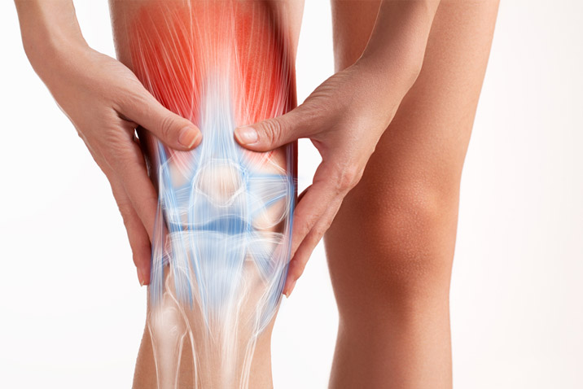
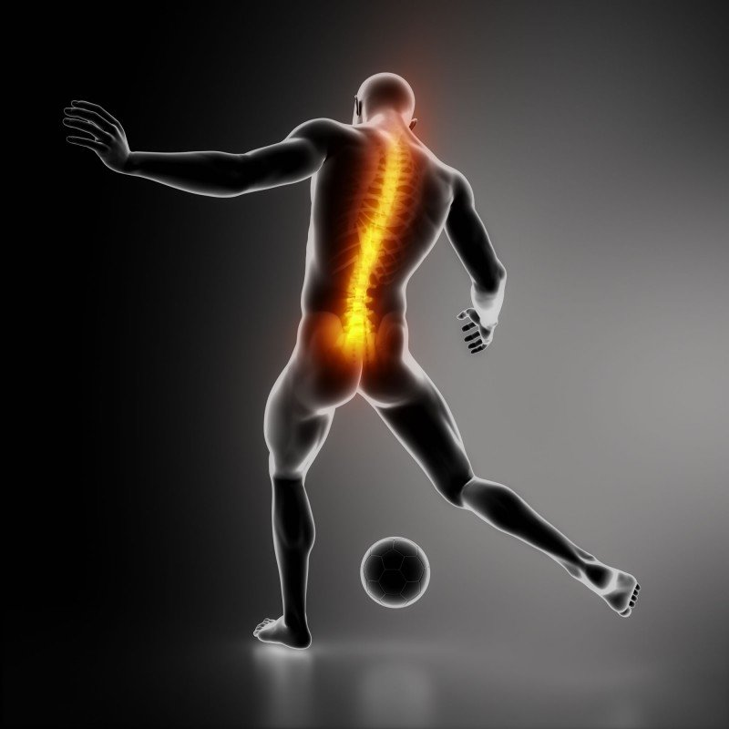
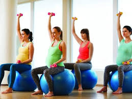
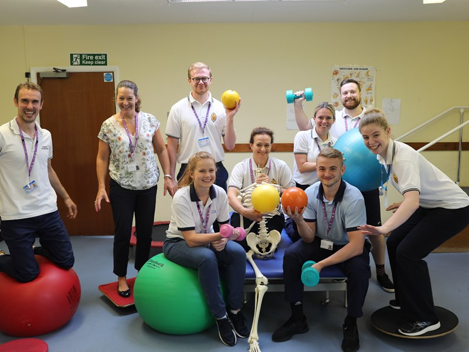
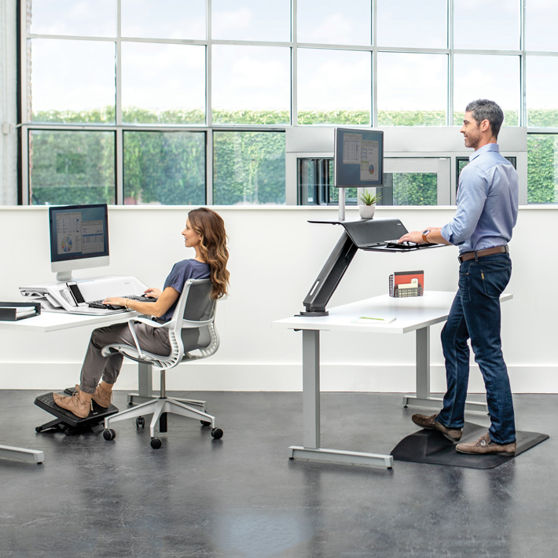

Musculoskeletal \ Orthopedic Physiotherapy
Relates to the disorder of musculoskeletal system. Musculoskeletal refers to muscles bones, joints, nerves, tendons, ligaments, cartilage and spinal discs. Approaches to management involve manipulation, manual assessment and treatment techniques , specific therapeutic exercise electrotherapy.
Sports Physiotherapy
Involves in prevention and management of injuries resulting from sports at all ages and at all levels of ability. Our specialized Physiotherapy provide evidence based advise on safe participation in sports.
Neuro Physiotherapy

Refers to the treatment of patients who have a neurological disorders. Neurological disorder are those affecting the brain, spinal cord and nerves.
Pediatric Physiotherapy

Pediatric physiotherapy help children to achieve optional physical development. They have knowledge in the movement, development and condition that are likely to affect the baby and growing child and treat from 1-day old babies to adolescent.
Women’s Health
Obstetrics and Gynecology is the case of women in relation to child birth both antenatally and postnatally including the teaching of antenatal classes in the treatment of incontinence and in the case of women undergoing gynecological surgery.
Geriatric Physiotherapy
A physiotherapist working with older people can be considered a “Jack of all trades”. The caseload is very mixed; patience’s with musculoskeletal, neurological and cardiovascular problems may all be found in a single caseload and often in same patient.
Community Physiotherapy
Aim providing low tech rehabilitation services for people with disability and focusing on people and community.
Corporate Wellness

Helps employees to deal with various concerns that they experience at work, at home or in their personal life. The sudden outbreak of the global pandemic has created a new worm. From a routine lifestyle, lockdown changes the employee approach work and workplace Corporate Wellness program includes health services that have proven efficacy in preventing and managing work related musculoskeletal disorders.
Home Care Physiotherapy
We offer physiotherapy treatments at your door step including musculoskeletal, neurological, pediatric, geriatric services etc.
Ergonomics
Ergonomics is the study of people in their workplace and is the process in which workplaces, products and system are designed or rearranged so that they fit the people who use them. It aims to reduce the risk of injury.